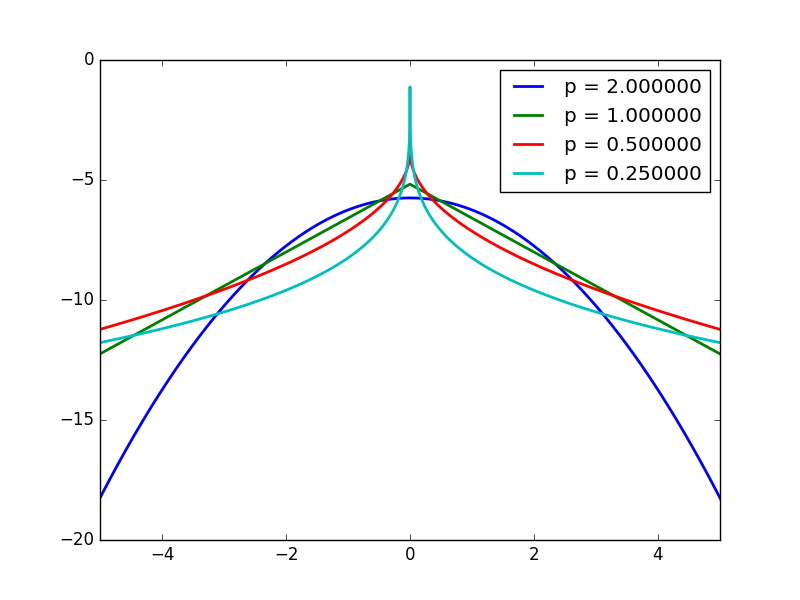
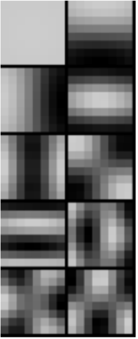
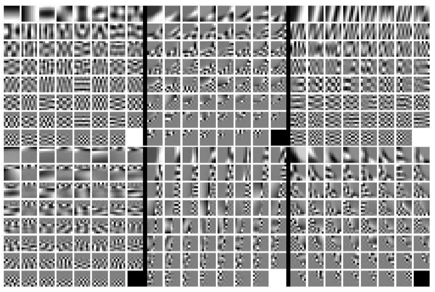
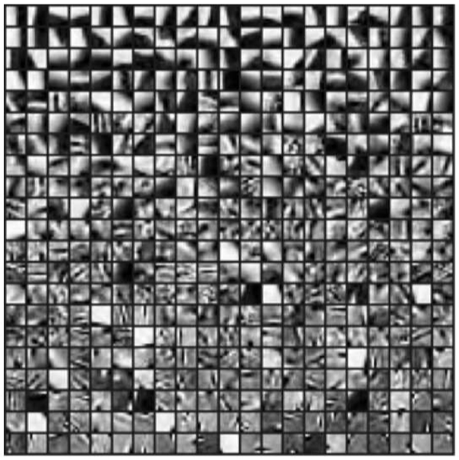

Image Prior: Modeling Spatial Relaionship
Materials: https://www.cse.wustl.edu/~ayan/courses/cse659a/lec1.html#/
- Image Prior: Modeling Spatial Relaionship
- Smoothing Regularization
- Learning Image Prior
This is the basis for most further applications
We need Regularizer for a spatial configuration
\[\hat X=\arg\min_X \phi(X)+R(X)\\\]This could be interpreted in a Bayesian way,
\[\hat X=\arg\max_XP(X|I)P(I)=\arg\max_X\log\exp(-\phi(X))+\log\exp(-R(X))\]Smoothing Regularization
Images (and labels) are smooth (Gradients are small) !
\[R(X)=\sum_n\sum_fR(\nabla_f*X[n])\]Design Choices
- What kind of gradient to penalize
- How do you penalize (L1, L2, Lp?) (L1 penalty is better often)
How to analyze a prior?
- Find the distribution corresponding to that regularizer
- See how it affect the minimizing result of a loss
Heavy Tail Distribution
- The smaller the p (p<2) the more heavy tail distribution
- Comparing to Gaussian, More emphasis in closing to 0, or quite large!
- So it’s said to be sparse prior!
- Natural image gradients appears to be heavy tail

Shrinkage function
The operator defined by solving minimization with regularization
\[s(v_0)=\arg\min_v\alpha(v-v_0)^2+R(v)\]- L2: scale the identity line ! $s(v_0) = \lambda v_0$
- L1: Shrink to 0 below $\alpha$, offset other things linearly by $\alpha$
- Lp ($p<1$): Shrink to 0 below $\alpha$, offset other things
Thus, Heavy tail regularizer will leave small values to be 0, and penalize not as hard towards the larger values.

Solvable Case
If you use wavelet transform (unitary matrix), then
Optimization
How Lp affect optimization
- L2, it’s a Least square problem,
- Can solve in Fourier Domain, and can use conjugate gradient! (to avoid forming the matrix Q)
- L1, Convex optimization, iteratively solvable with shrinkage function
- Lp < 1, Not even convex !
Algorithms
Problem setting
\[\hat X=\arg\min_X\|AX-Y\|^2+\lambda\sum_n |\nabla_x*X[n]|^p + |\nabla_y*X[n]|^p\]Fourier Domain Least Square
If it’s
Conjugate Gradient
We can do CG if $p==2$
Note, if you have per pixel weight, you have to use CG, because it’s not convolution.
Iterative Reweighted Least Square (IRLS)
Rationale: We know how to solve least square, so just map the problem to least square
- Use weight to transform problem as p=2
- Solve the p=2 Least square
- Update the weights
- Iterate!
Note:
- p=1 it’s convex, so globally converging
- p<1 it’s not guanranteed, as loss is not convex.
Quadratic splitting
It’s the simplest case of Proximal method in optimization.
Basic Idea: Split the optimization variables into 2, and introduce relaxation variable
- Split the problem into 2 and let the 2 parts negotiate and compete!
Relax the problem of
\(\arg\min_XF(X)+G(X)\) Into
\(\arg\min_X\min_WF(X)+G(W)+{\beta\over2}\|X-W\|^2\) When $\beta$ is large enough, this goes back to original problem
Then you can optimize the 2 variables alternatively and iteratively, if these problems are simple enough!
\(\hat X_t=\arg\min_X F(X)+{\beta\over2}\|X-W\|^2\\ \hat W_t=\arg\min_WG(W)+{\beta\over2}\|X-W\|^2\) And then you increase $\beta$ from time to time, tighten it up! make it converge back to original problem.
Note ADMM is more principled version of this.
In our case, relax the problem as
\[\hat X=\arg\min_X\|AX-Y\|^2+{\beta\over2}\sum_n |\nabla_x*X[n]-w_x[n]|^2 + |\nabla_y*X[n]-w_y[n]|^2+|w_x[n]|^p+|w_y[n]|^p\]- Thus Optimization towards $X$ can be solved by Fourier Domain Least Square.
- Optimization towards $w_x, w_y$ are pixelwise 1-d optimization. Can use shrinkage function LUT to compute.
- Also increase $\beta$
Work super well in practise
- If your problem has multiple parts, these parts doesn’t work well with each other, but they all work with quadratic loss,
- Then you can try splitting your problem!
This could be applied to deblurring!
Gradient Penalty Regularizer
Maybe the function should not be applied pixel wise to gradient, it can be applied to the gradient space as a whole.
\[R(X)=R(\nabla*X)[n]\]$R(.)$ can be a function on the whole space!
- Using pixelwise regularizer is assuming independence between pixels / channels. May not be true.
- Also the operation is independent on different pixel / elements! May not be desirable.
Radial function regularizer
\[R(v_1,v_2...)=(\sqrt{v_1^2+v_2^2+...})^p=(\|v\|)^p\]Regularizer applies to vector norm instead of individual component.
n dimension Shrinkage function \([v_1,v_2]=\arg\min_{v_1,v_2}\|v-v_0\|^2+\|v\|^p\) The result is interesting, It’s just the original shrinkage function applied to radial direction (the vector norm direction).
This could be applied to RGB image, the 3 channels are not independent.
- The pixel is shrink to 0 only if all 3 channels are small to some extant!
- Shrink 3 channel independently can cause color shifting.
Learning Image Prior
Almost universal truth
- Better prior are more complicated, harder to optimize
- Better priors are more data driven, better than hand crafted
- But if you have data, use data driven prior.
Caveat: Image itself is too high dimensional, you’d better start working with patch!
How to learn a distribution?
Choose a parametric form of distribution \(p(X\mid\theta)\), which you could evaluate likelihood!
Given the Samples $[X_1,X_2…]$, Do maximum likelihood inference for the $\theta$
Gaussian Prior
Training a Gaussian prior is analytically exact! Just compute the mean and covariance matrix of all your data (image patch) samples. \(\mu=\frac 1T\sum_tX_t,\; \Sigma=\frac 1T\sum_t(X_t-\mu)(X_t-\mu)^T\)
Gaussian Prior Characteristics
- Normally your mean vector at small scale is equal luminance !
- If you do Eigen decomposition of covariance matrix (do PCA), $\Sigma=VDV^T$ then you will find interesting result
- PC1 pattern is the overall luminance
- PC2-…. looks really like Fourier Basis !!!!
- Note if your samples are translational invariant, the Fourier Basis is expected!
- Note if your images are aligned by sth., then it’s no longer translational invariant, then you will see interesting patterns around the alignment point!

Applying Prior
Actually Gaussian prior regularizer is equivalent to regularizing a filtered image.
- Note the first PC is different!
- Usually the first eigenvalue is pretty large !
- And the distribution over the first eigenvector is not Gaussian! more uniform.
- The next few components will work like convolving $V_i$ onto image with a squared penalty on gradients
Bayesian Interpretation of Gaussian Denoising
The posterior of 2 Gaussian multiplied is still a Gaussian! Good !
Two kinds of Bayesian estimator
- MAP, maximum / mode of the posterior $\arg\max_X p(X\mid Y)$
- Mean Estimator $\mathbb E_{p(X\mid Y)}(X)$
Note for Gaussian, mean and mode are the same!
Gaussian Mixture Prior
\[p(x)=\sum_i\pi_ip(x;\mu_i,\Sigma_i)\\ \sum_i \pi_i=1\]One step further, GMM is still a pretty good distribution.
- Mean $\mu=\sum_i\pi_i\mu_i$
- Covariance: Consists of within gaussian term and across gaussian term (variance between the mean).
- $\mathbb E (X-\mu)(X-\mu)^T=\sum_i\pi_i\Sigma_i +\sum_i\pi_i(\mu_i-\mu)(\mu_i-\mu)^T$
High Flexibility
- Multimodal
- The covariance structure is not “ellipsoidal”, it can be more restrictive, choosing between axis 1,2,3 !
- The decay is not of gaussian speed! —- heavier tail distribution!
- Choosing between close to 0,
- etc. approximation to any function, given enough components.
Note: this is also quite powerful for theoretical purpose, can use this as model of underlying distribution.
Fitting a Gaussian Mixture
Parameters: $\Theta ={\pi_i,\mu_i,\Sigma_i}$
Bad news: likelihood non-convex!
- Note, there is internal swap symmetry of the Likelihood function, thus it’s definitely non-convex
You have to use EM algorithm.
Expectation Maximization
Think of mixture of gaussian distribution as a 2 step process.
Introduce the label variable $Z\in{1,2,…k}$ with distribution
$p(Z=i)=\pi_i$
The posterior distribution of $X$ is Gaussian. \(p(X\mid Z=i)=\mathcal N(X\mid \mu_i,\Sigma_i)\) The variable $X$ marginalizes as the GMM \(p(X)=\mathbb E_Z p(X\mid Z)=\sum_ip(Z=i)p(X\mid Z=i)\) Key Observation: If you know the value of $Z_i$ for each sample (cluster belonging), then estimate the Gaussian parameters are easy.
EM Algorithm:
- Estimate $Z_i$ based on ${\mu_i,\Sigma_i}$
- Fix $Z_i$ and estimate ${\mu_i,\Sigma_i}$.
Properties
- Similar to K Means, just with soft assignment!
- No guanrantee of anything …..
Tricks to make it work
- One component can die! $\pi_i$ can go to 0 and it will not resurrect
- You need to add smallest value to constraint, or reinitialize the component manually.
- Initialization Tricks
- Do random initialization
- Try different number of K
- Heat up EM
- You can do hard K Means first and then do EM.
- Constrain EM
- You can add constraints among $\mu_i$ or $\Sigma_i$ relationship, so that you have less variable.
Mixture Gaussian Patch Prior
Each component allows a certain kind of variation. It behaves like classifying the local patches first, and then regularize one kind of patch with the Gaussian estimated from PCA of training sample.
Zoran and Weiss 2011

GMM Regularizer
\[\|Y-X\|^2-\log p(X)=\|Y-X\|^2-\log\sum_i\pi_if(X;\mu_i,\Sigma_i)\]Conceptually, note that this could be think of as posterior $p(X\mid Y)$
The posterior is also in GMM family! with the new parameters $\Theta’={\pi’_i,\mu’_i,\Sigma’_i}$
So it’s kind of adaptive Gaussian denoising. Given a patch in a image,
From Patch Prior to Image Prior
Note the priors we derived are all patch based prior. So when we denoise overlapping patches, some procedure should be taken to prevent Oversmoothing!
More principle way is to crop out patches by operator $P_i$ and inference them as prior \(\arg\min_X\|AX-Y\|^2-\sum_i\log p(P_iX)\) Thus it could be inferenced by the Half Quadratic Splitting Trick!
Weiss & Zoran 2011 EPLL
Sparse Dictionary Regularizer
Having a few templates, and enforce that each patch should look like the linear combination of a few templates (atoms). Requires that the recombination weights are sparse, only a few non-zero entries. \(\arg\min\|X-\sum_i\alpha_iD_i\|^2\)
Algorithm
Dictionary learning
- Direct $\alpha$ learning is combinatoric hard! There are combinatorical way of active $\alpha$
- Learning the templates is also hard
- SOTA algorithm K-SVD Aharon et.al.
- K-SVD talk
- K-SVD paper
Dictionary Result
Note the learned dictionary looks much like the templates, more than Fourier Basis. Thus more informative.
Comparison to GMM
- GMM: select one branch and allow a certain type of variation.
- Sparse Dictionary: Store different atoms of the image.

Refer to the advanced course.
CSE 585T Sparse Modeling for Imaging and Vision
CNN-Denoiser Based Prior
Observe that in half quadratic splitting, the prior only affects denoising, i.e. the following problem
\(Z=\arg\min_Z{\beta\over2}\|X-Z\|^2-\log p(Z)\)
So no matter your application, i.e.
\(X=\arg\min_X\|AX-Y\|_2^2+{\beta\over 2}\|X-Z\|^2-\log p(Z)\)
you can use the denoising prior!
Learning Deep Denoising Prior
Given the denoising problem, It’s easy to generate some image sample pairs $(X,Z)$ and use them to train a CNN to fit this function \(Z=f(X;\beta)=\arg\min_Z{\beta\over2}\|X-Z\|^2-\log p(Z)\) So we note that we have to train a different CNN to solve the problem with a different strength of prior.